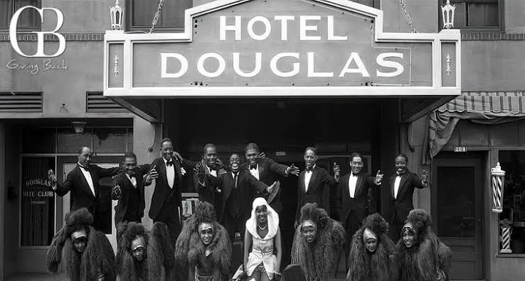
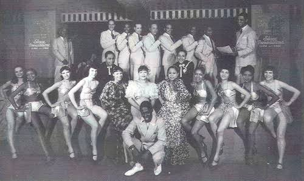
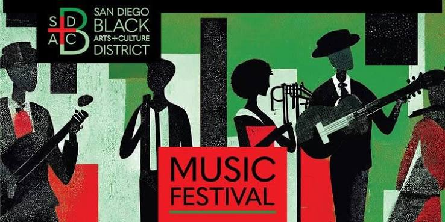
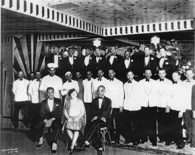
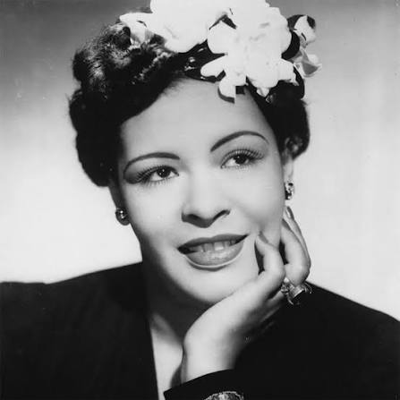
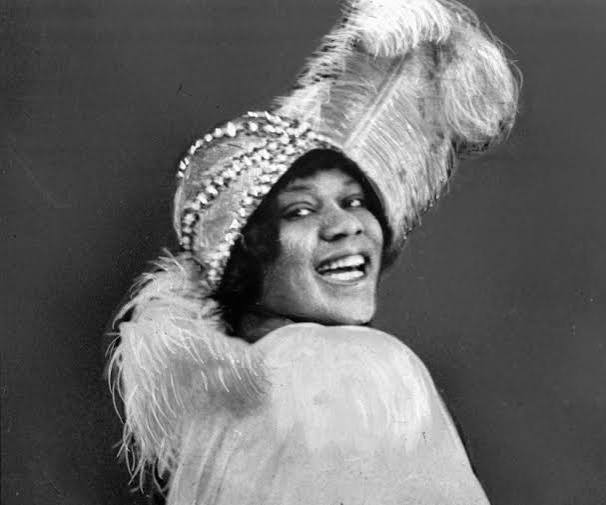

Black Joy in San Diego
Black San Diegans built places of joy even under segregation. This site follows one of them, the Douglas Hotel and its Creole Palace nightclub, and the community that rebuilt in Southeast San Diego after it was gone.
Places

Douglas Hotel
Built in 1924, it was for decades the only downtown San Diego hotel offering quality lodging to Black travelers during segregation.

Creole Palace
The hotel’s nightclub became an important site of Black entertainment and community life in San Diego.

Black Arts & Culture District
A nine-block corridor of Black-owned businesses, art spaces, and community gathering places on Imperial Avenue in Encanto.
People

The Owners
George Ramsey and Robert Rowe built the Douglas Hotel in 1924. After Robert died months later, his widow, Mabel, took over his work.

Duke Ellington
A jazz musician who played the Creole Palace, a San Diego club modeled on Harlem’s Cotton Club but without its whites-only policy.

Billie Holiday
Performed at the Creole Palace. Her 1939 recording of “Strange Fruit,” about lynching, has been called one of the first true protest songs in American popular music.

Bessie Smith
One of the most influential blues singers of the 1920s and 1930s, and a performer the Creole Palace hosted.